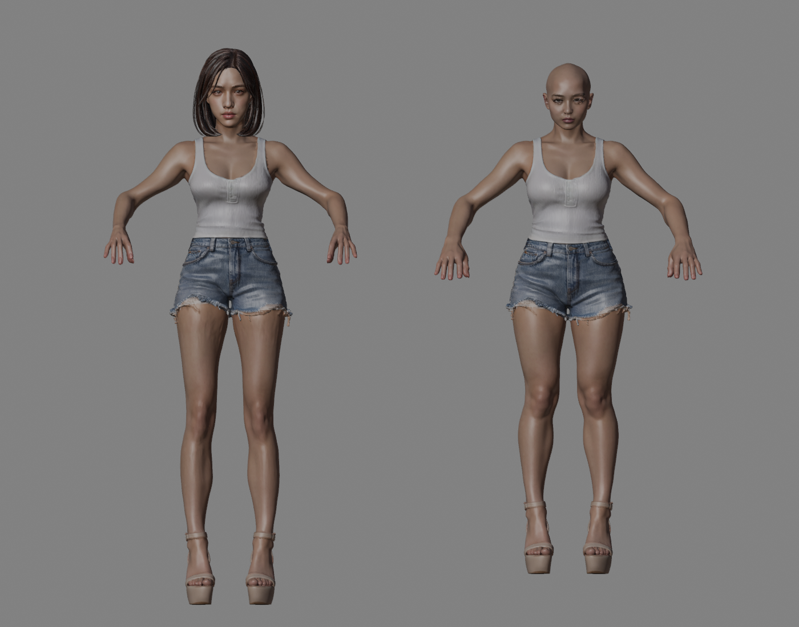
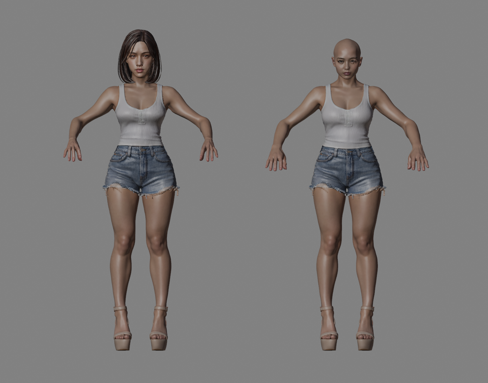
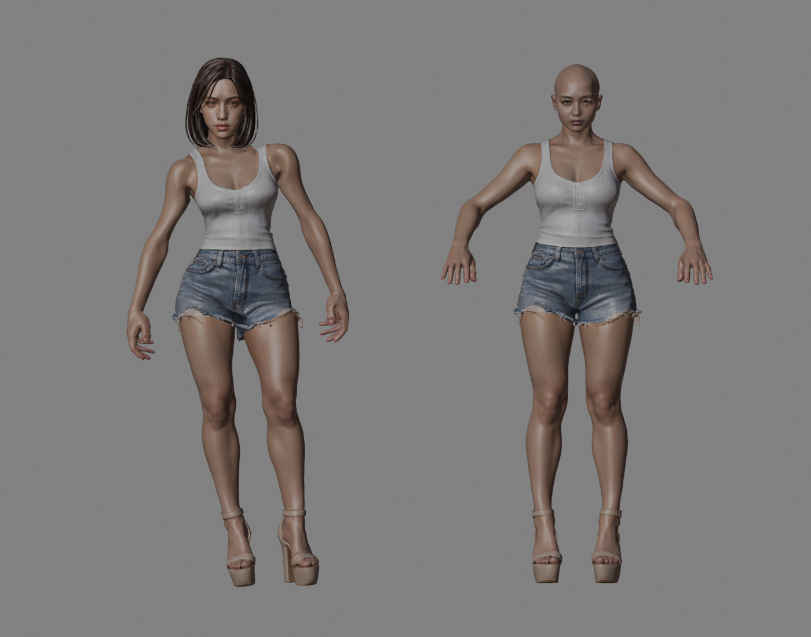
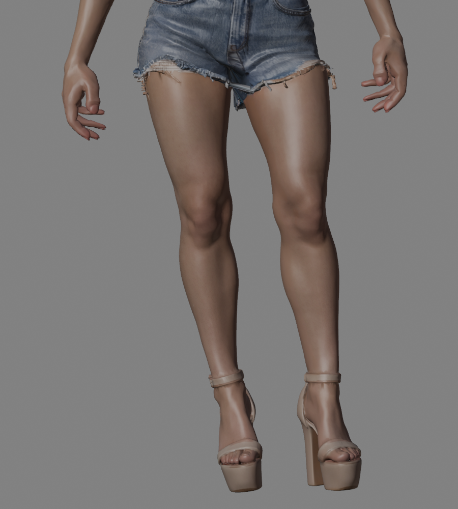
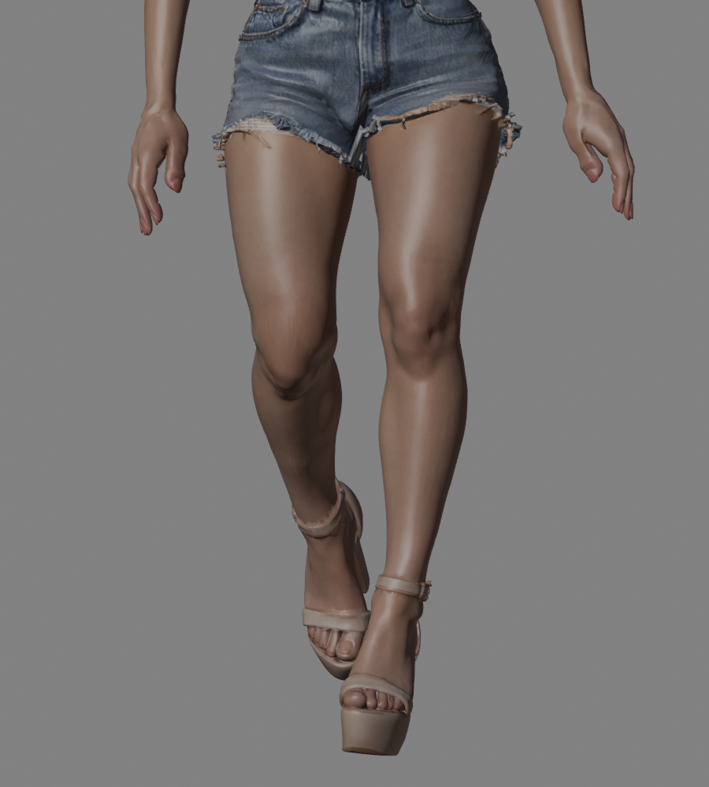
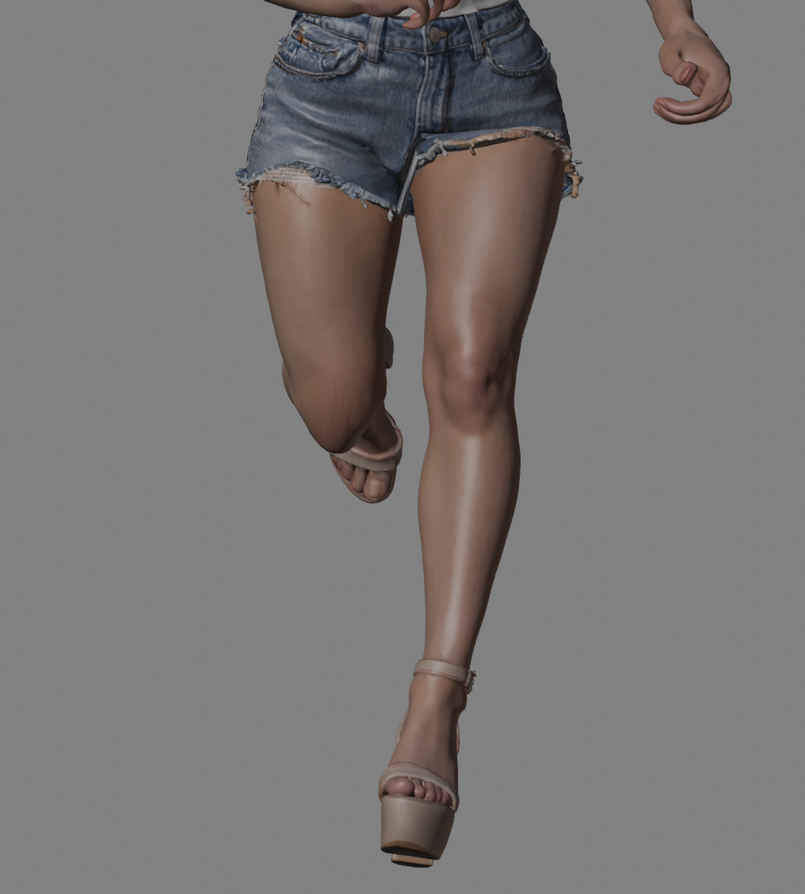
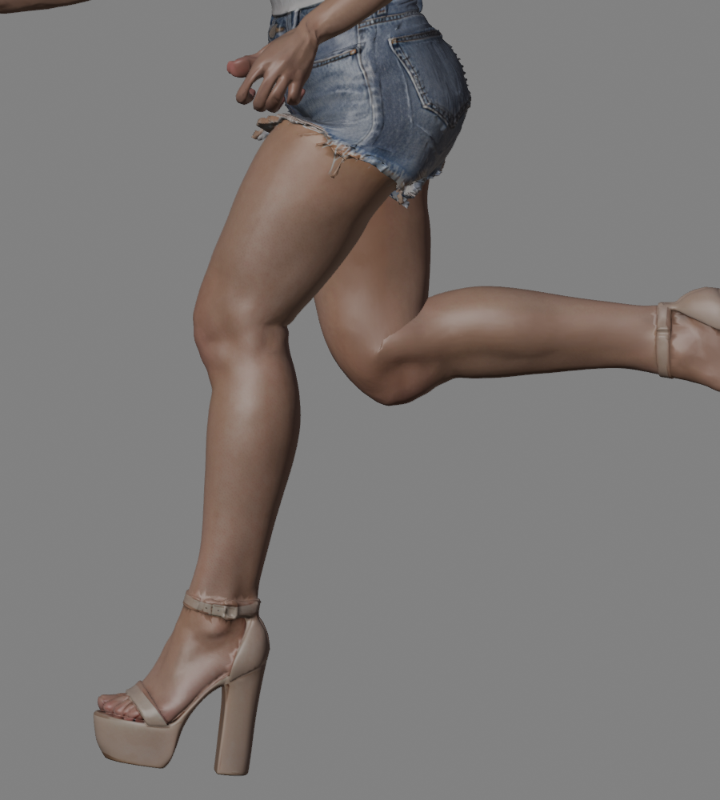

夏晴 R6 · 原始背心人体并排对照
左侧为夏晴，右侧为只做统一缩放与整体平移的原始人体。工程中已实际放置右侧参考，本轮未部署。
修复前：旧适配的下肢已拉长变细

R5 与原始人体，使用相同相机。
修复后：恢复原下肢形状，再将骨架匹配身体

R6 与原始人体。腿部和鞋体已回到一致的源坐标比例。
待机与固定原形参考

夏晴处于待机；右侧参考保留原A姿势，不参与动画。
小腿局部动作复看

Idle：肌腹随小腿骨整体转动。
Walk：踝部动作已适配刚性高跟鞋。
Run 正面。
Run 侧面，膝踝保留关节弯曲过渡。局部复看中小腿肌腹边长保持原值；鞋体保持刚性。右侧参考只保存在 Blender 对照工程，导出的角色GLB只包含夏晴。